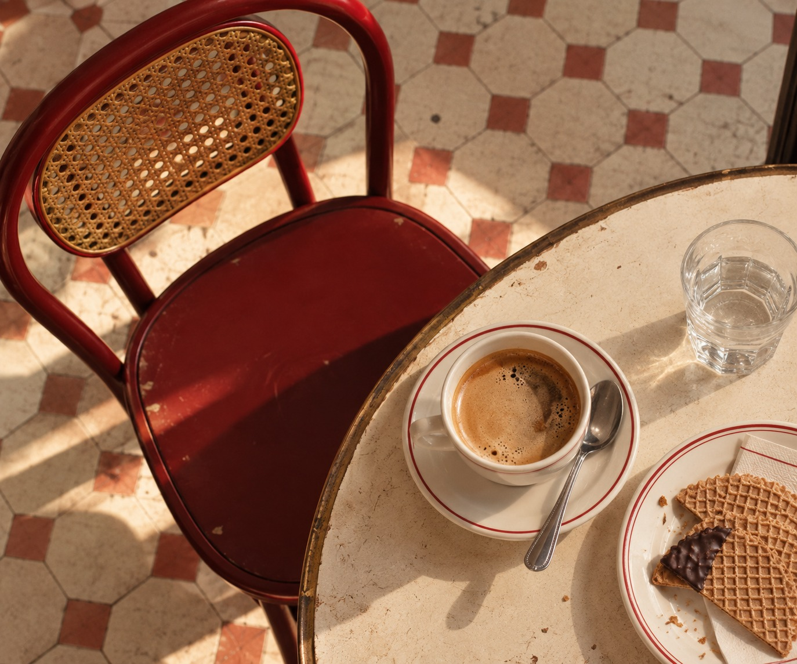
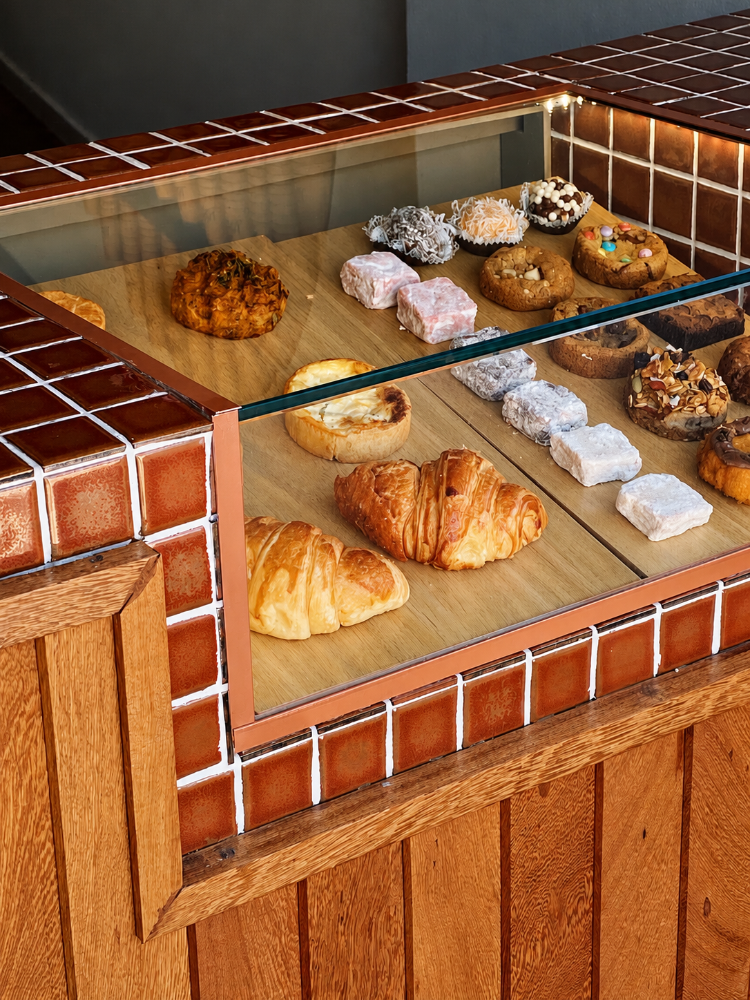

Hay sabores
que nunca se olvidan
En Barquillo recuperamos los sabores, rituales y tradiciones de nuestra infancia y los traemos al presente.


Un rato para disfrutar,
como antes
Barquillo no es un café cualquiera. Es un recuerdo que trajimos al presente: una experiencia para compartir, hacer una pausa y reencontrarnos con esos sabores que alguna vez nos hicieron felices.
Nuestra infancia está llena de galletitas, alfajores y de esos pequeños tesoros que esperaban detrás de las vidrieras de las panaderías de barrio.
Sabores conocidos que nos acompañaron durante años y que todavía tienen el poder de llevarnos a otro momento.
De ahí nace Barquillo. De las ganas de recuperar esos clásicos, reinterpretarlos y crear un lugar donde podamos volver a disfrutarlos.
Porque, aunque sea por un rato, todos merecemos volver a sentirnos chicos.